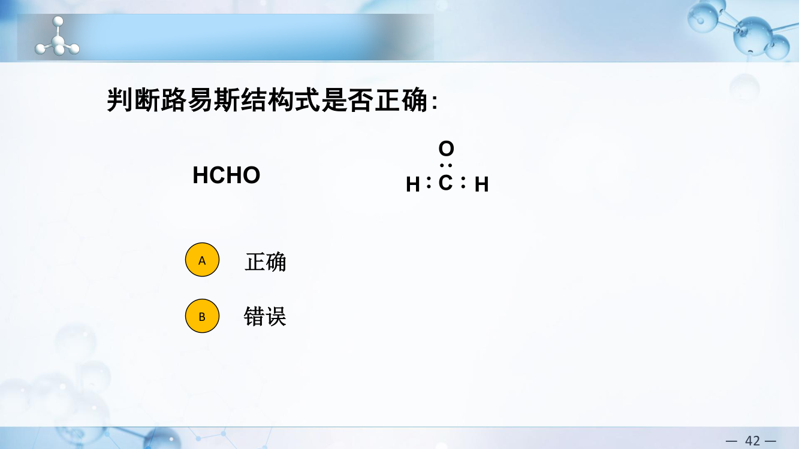
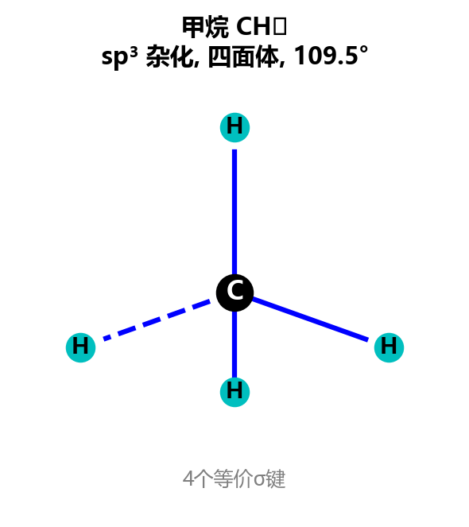
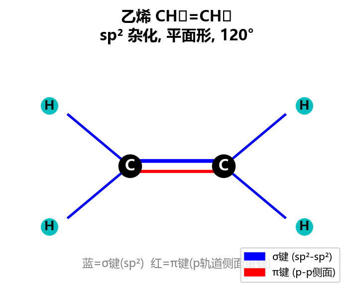
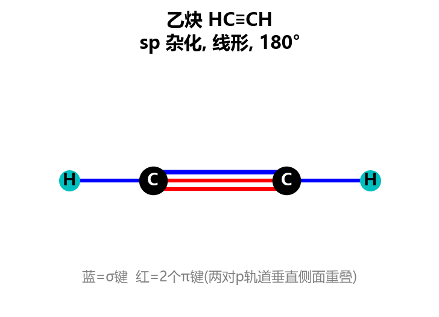
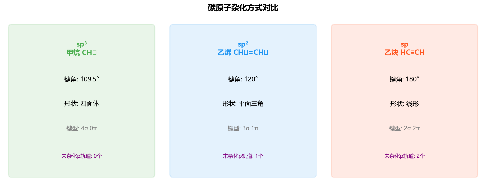
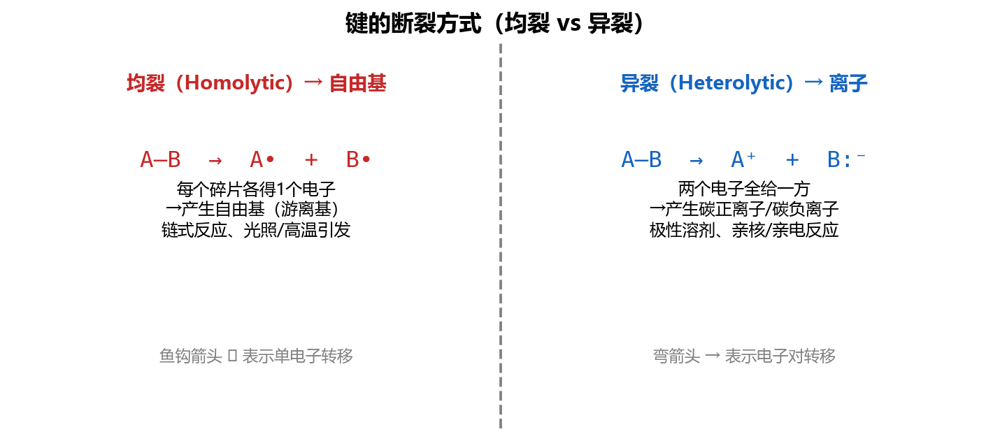
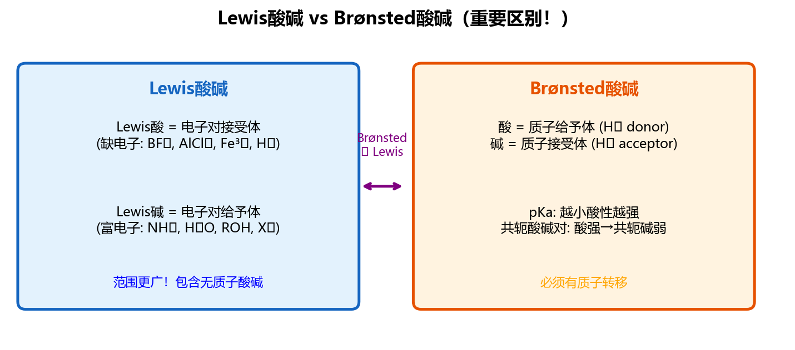
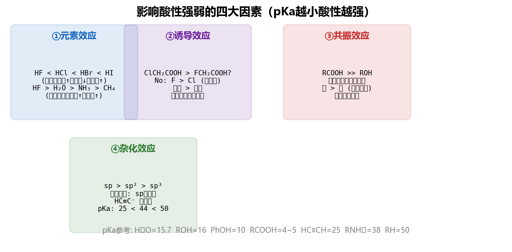
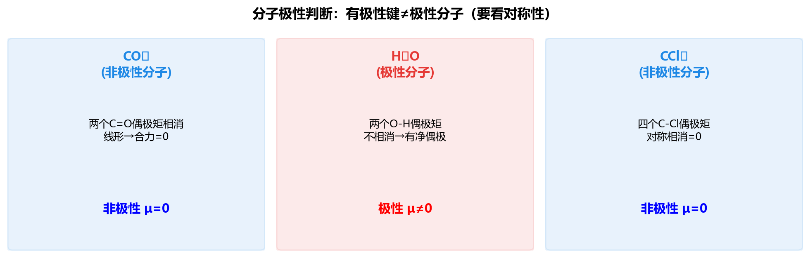
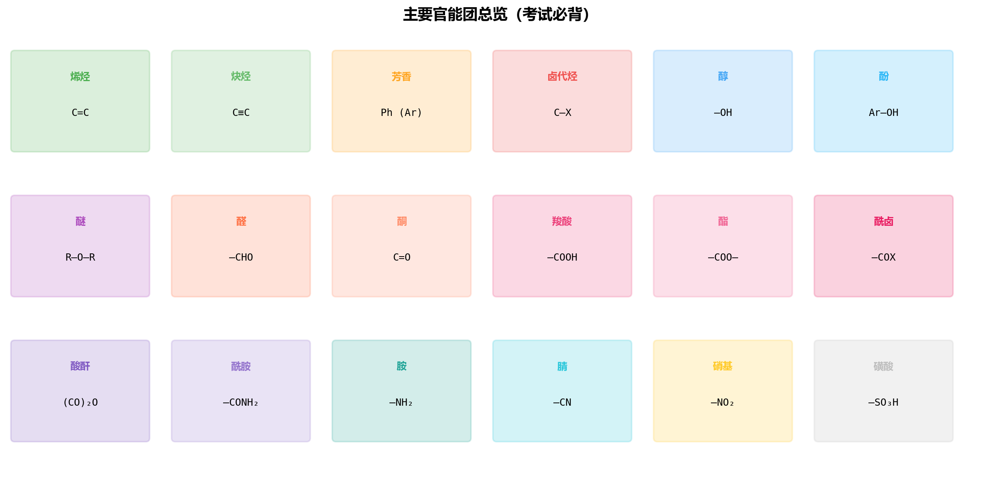

核心思想：共价键的形成是原子轨道重叠（电子云重叠）的结果，重叠越多键越强。
σ键（头碰头重叠）：s-s重叠、s-p重叠、p-p轴向重叠 → 沿键轴圆柱对称，可自由旋转
π键（肩并肩重叠）：p-p侧面重叠 → 节面包含键轴，不能自由旋转
单键 = 1σ；双键 = 1σ + 1π；叁键 = 1σ + 2π

LCAO方法：n个原子轨道线性组合 → n个分子轨道
对称性匹配原则：只有对称性相同的原子轨道才能有效组合
成键轨道：能量降低，电子云集中在核间（同相叠加）
反键轨道（$\sigma^*$, $\pi^*$）：能量升高，核间有节面（反相叠加）
基态电子排布：$1s^2 2s^2 2p^2$（4个价电子）
碳形成四个共价键的原因：激发态 $2s^1 2p^3$ → 杂化后形成4个等价杂化轨道
碳的四价是有机化学的基础——碳总是形成4根键（4个σ键，或σ+π组合）
| 杂化类型 | 参与轨道 | 空间构型 | 键角 | 未杂化p轨道 | 形成的键 | 实例 |
|---|---|---|---|---|---|---|
| $sp^3$ | 1个s + 3个p | 正四面体 | 109.5° | 0 | 4个σ键 | CH₄、乙烷 |
| $sp^2$ | 1个s + 2个p | 平面三角形 | 120° | 1个pz | 3σ + 1π | CH₂=CH₂、苯 |
| $sp$ | 1个s + 1个p | 直线形 | 180° | 2个(py, pz) | 2σ + 2π | HC≡CH、CO₂ |




• 碳原子和与碳相连的氢原子省略不写
• 端点和拐角处代表碳原子（补足四价即为H）
• 单线 = 单键；双线 = 双键；叁线 = 叁键
• 杂原子（O、N、S、X等）及其上的H必须写出
| 大类 | 子类 | 示例 |
|---|---|---|
| 链状（开链/脂肪族） | 饱和 | 烷烃 |
| 不饱和 | 烯烃、炔烃 | |
| 环状 | 脂环 | 环己烷 |
| 芳环 | 苯及其衍生物 | |
| 杂环 | 吡啶、呋喃、吡咯 |
分子式相同但结构不同的化合物。
例1：$\text{C}_2\text{H}_6\text{O}$ → 乙醇 $\text{CH}_3\text{CH}_2\text{OH}$（醇）vs 甲醚 $\text{CH}_3\text{OCH}_3$（醚）— 官能团异构
例2：$\text{C}_4\text{H}_{10}$ → 正丁烷（直链）vs 异丁烷/2-甲基丙烷（支链）— 碳骨架异构
两个成键原子核间的平衡距离。键级越高，键长越短：
| 键类型 | 键长(pm) | 示例 |
|---|---|---|
| C—C | 154 | 乙烷 |
| C＝C | 134 | 乙烯 |
| C≡C | 120 | 乙炔 |
两个共价键之间的夹角，由中心原子杂化方式决定：
• $sp^3$ 杂化（甲烷）：键角 109.5°（正四面体）
• $sp^2$ 杂化（乙烯）：键角 120°（平面三角形）
• $sp$ 杂化（乙炔）：键角 180°（直线形）
键能（是平均值）：$\text{CH}_4$ 的C-H平均键能 = 414 kJ/mol
键的极性：由两个不同原子形成的共价键，因电负性不同导致电子云偏向电负性大的原子，形成极性共价键。
偶极矩：$\mu = q \times d$（电荷量 × 正负电荷中心距离），单位 Debye (D)
分子偶极矩 = 各键偶极矩的向量和。方向：箭头指向负极（约定）。
| 键 | 键长/pm | 键角 | 杂化 |
|---|---|---|---|
| C-C（乙烷） | 153.4 | 109.5° | sp³-sp³ |
| C=C（乙烯） | 133.7 | 121.6°(H-C=C), 116.7°(H-C-H) | sp²-sp² |
| C≡C（乙炔） | 120.7 | 180° | sp-sp |
| C-H（乙烷） | 110.2 | - | sp³-s |
| C-H（乙烯） | 108.6 | - | sp²-s |
| C-H（乙炔） | 105.9 | - | sp-s |
均裂（光/热引发）→ 产生自由基（free radical）：$\text{A:B} \xrightarrow{h\nu/\Delta} \text{A}\cdot + \text{B}\cdot$
用鱼钩箭头（半箭头）表示单电子转移 → 自由基反应（链式反应）
异裂（酸碱/极性溶剂）→ 产生离子：$\text{A:B} \to \text{A}^+ + \text{B}^-$
用弯箭头（全箭头）表示电子对转移 → 离子型反应
| 中间体 | 生成方式 | 特征 | 稳定性因素 |
|---|---|---|---|
| 碳正离子 R⁺ | 异裂（C失去电子对） | 缺电子，sp²杂化，平面构型 | 叔 > 仲 > 伯 > 甲基（超共轭/共轭稳定） |
| 碳负离子 R⁻ | 异裂（C获得电子对） | 富电子，sp³杂化，三角锥 | 与酸碱理论相关（共轭酸pKa越小越稳定） |
| 自由基 R· | 均裂 | 含单电子，sp²杂化 | 叔 > 仲 > 伯 > 甲基 |

酸 = 能给出质子($\text{H}^+$)的物质；碱 = 能接受质子($\text{H}^+$)的物质
共轭酸碱对：酸失去质子后变为其共轭碱，碱得到质子后变为其共轭酸
酸碱的概念是相对的：某分子在一个反应中是酸，在另一个反应中可能是碱。例如 $\text{H}_2\text{O}$：
与HCl反应时做碱：$\text{HCl} + \text{H}_2\text{O} \rightleftharpoons \text{H}_3\text{O}^+ + \text{Cl}^-$
与NH₃反应时做酸：$\text{H}_2\text{O} + \text{NH}_3 \rightleftharpoons \text{NH}_4^+ + \text{OH}^-$
酸的强度用离解平衡常数 $K_a$ 或其负对数 $\text{pK}_a$ 表示：
$$K_a = \frac{[\text{A}^-][\text{H}_3\text{O}^+]}{[\text{HA}]}, \quad \text{pK}_a = -\lg K_a$$$\text{pK}_a$ 越小 → 酸性越强；$\text{pK}_a$ 越大 → 共轭碱越强
碱的强度用 $K_b$ 或 $\text{pK}_b$ 表示：
$$K_b = \frac{[\text{BH}^+][\text{OH}^-]}{[\text{B}]}, \quad \text{pK}_b = -\lg K_b$$| 化合物 | $\text{pK}_a$ | 化合物 | $\text{pK}_a$ |
|---|---|---|---|
| $\text{HI}$ | -10 | $\text{H}_2\text{O}$ | 15.7 |
| $\text{HBr}$ | -9 | $\text{CH}_3\text{OH}$ (甲醇) | 15.5 |
| $\text{HCl}$ | -7 | $\text{C}_2\text{H}_5\text{OH}$ (乙醇) | 15.9 |
| $\text{H}_2\text{SO}_4$ | -3 | $(CH_3)_3COH$ (叔丁醇) | 19 |
| $\text{H}_3\text{O}^+$ | -1.7 | $\text{HC≡CH}$ (乙炔) | 25 |
| $\text{HF}$ | 3.2 | $\text{H}_2\text{C=CH}_2$ (乙烯) | 44 |
| $\text{CH}_3\text{COOH}$ (乙酸) | 4.75 | $\text{NH}_3$ (氨) | 38 |
| $\text{HCO}_2\text{H}$ (甲酸) | 3.75 | $(CH_3)_2NH$ (二甲胺) | 36 |
| $\text{HCN}$ (氢氰酸) | 9.2 | $\text{CH}_3\text{CH}_3$ (乙烷) | 50 |
| $\text{C}_6\text{H}_5\text{OH}$ (苯酚) | 10.0 | $\text{CH}_4$ (甲烷) | 48 |
| $\text{NH}_4^+$ (铵离子) | 9.2 | $(CH_3)_3N$ (三甲胺共轭酸) | 9.8 |
核心定义：碱是电子的给予体（electron donor），酸是电子的接受体（electron acceptor）
$$\text{A (酸)} + \text{:B (碱)} \longrightarrow \text{A:B (酸碱配合物)}$$Lewis酸碱反应中，碱的孤电子对→酸的空轨道，形成配位键。弯箭头从碱指向酸。

核心逻辑：酸越强 ↔ 共轭碱越稳定 ↔ 负电荷越分散/越稳定

• 全箭头（→）：一对电子转移 • 半箭头（鱼钩）：单电子转移（自由基）

| 作用力 | 强度 | 条件 | 示例 |
|---|---|---|---|
| 氢键 | 最强(10-40kJ/mol) | F-H、O-H、N-H与F/O/N | H2O、醇、酸、胺 |
| 偶极-偶极 | 中等 | 极性分子间 | CH3Cl、丙酮 |
| London色散力 | 最弱但普遍 | 所有分子都有 | 烷烃、惰性气体 |
| 化合物 | 分子量 | 主要分子间力 | 沸点/℃ |
|---|---|---|---|
| $\text{CH}_3\text{CH}_2\text{OH}$ (乙醇) | 46 | 氢键 | 78 |
| $\text{CH}_3\text{CHO}$ (乙醛) | 44 | 偶极-偶极 | 20 |
| $\text{CH}_3\text{CH}_2\text{CH}_3$ (丙烷) | 44 | London力 | -42 |
| MW~30-32组 | |||
| $\text{CH}_3\text{OH}$ (甲醇) | 32 | 氢键 | 65 |
| $\text{HCHO}$ (甲醛) | 30 | 偶极-偶极 | -19 |
| $\text{C}_2\text{H}_6$ (乙烷) | 30 | London力 | -89 |
| MW~58-60组 | |||
| $\text{CH}_3\text{CH}_2\text{CH}_2\text{OH}$ (正丙醇) | 60 | 氢键 | 97 |
| $(\text{CH}_3)_2\text{C=O}$ (丙酮) | 58 | 偶极-偶极 | 56 |
| $\text{CH}_3\text{CH}_2\text{CH}_2\text{CH}_3$ (丁烷) | 58 | London力 | -1 |
结论：分子量相近时，能形成氢键的化合物沸点远高于仅有偶极作用的极性分子，后者又高于仅靠色散力的非极性分子。
| 官能团 | 结构 | 化合物类 | 典型反应 | 实例 |
|---|---|---|---|---|
| C=C (碳碳双键) | R2C=CR2 | 烯烃 | 亲电加成 | 丙烯、环己烯 |
| C≡C (碳碳三键) | RC≡CR | 炔烃 | 亲电加成、亲核加成 | 乙炔、丙炔 |
| C-X (碳卤键) | R-X | 卤代烃 | 亲核取代、消除 | 氯甲烷、溴乙烷 |
| -OH (羟基) | R-OH | 醇 | 取代、消除、氧化 | 乙醇、环己醇 |
| Ar-OH (酚羟基) | Ar-OH | 酚 | 亲电取代、酸性 | 苯酚、对甲酚 |
| R-O-R (醚键) | R-O-R' | 醚 | 较惰性；酸性条件断裂 | 乙醚、THF |
| -CHO (醛基) | RCHO | 醛 | 亲核加成、氧化 | 甲醛、苯甲醛 |
| C=O (酮基) | RCOR' | 酮 | 亲核加成 | 丙酮、环己酮 |
| -COOH (羧基) | RCOOH | 羧酸 | 酸性、酯化、还原 | 乙酸、苯甲酸 |
| -COOR (酯基) | RCOOR' | 酯 | 水解、还原 | 乙酸乙酯 |
| -NH2 (氨基) | RNH2 | 胺 | 碱性、亲核、酰化 | 乙胺、苯胺 |
| -CONH2 (酰胺基) | RCONH2 | 酰胺 | 水解 | 乙酰胺 |
| -NO2 (硝基) | R-NO2 | 硝基化合物 | 还原为胺 | 硝基苯 |
| -SH (巯基) | R-SH | 硫醇 | 氧化成二硫键 | 半胱氨酸 |
| 苯环 (芳环) | C6H5- | 芳香烃 | 亲电取代 | 苯、甲苯、萘 |

(a) CO：价电子=4+6=10。:C≡O:（三键+C上1对孤电子+O上1对孤电子）。FC(C)=4−2−3=−1，FC(O)=6−2−3=+1。验证：−1+1=0 ✓
(b) BH3：价电子=3+3=6。B形成3个B−H单键（6电子恰好用完）。B只有6个电子，八隅体例外，缺电子 → 强Lewis酸。所有原子FC=0。
(c) NO2−：价电子=5+12+1=18。骨架O−N−O。最佳结构：一个N=O双键+一个N−O单键+N上无孤电子对+单键O上3对孤电子。FC(N)=5−0−4=+1? 不对，重新算：如果N形成1双键1单键且有1对孤电子：FC(N)=5−2−3=0。
实际上NO2−有两个等价共振式：[:O=N−O:]− ↔ [:O−N=O:]−。FC(双键O)=0，FC(���键O)=6−6−1=−1，FC(N)=5−2−3=0。
(d) CH2N2：价电子=4+2+10=16。最佳骨架H2C=N=N。
共振式I：H2C=N+=N−（FC: C=0, 中间N=+1, 末端N=−1）
共振式II：H2C−−N+≡N（FC: C=−1, N=+1, N=0）
I贡献更大（负电荷在电负性较大的末端N上）。
(e) HCN：价电子=1+4+5=10。H−C≡N:（N上1对孤电子）。所有FC=0。
HCl(−7) > CH3COOH(4.75) > C6H5OH(10) > H2O(15.7) > HC≡CH(25) > CH2=CH2(44) > CH3CH3(50)
| 酸 | pKa | 共轭碱稳定化因素 |
|---|---|---|
| HCl | −7 | Cl原子大、电荷分散好 |
| CH3COOH | 4.75 | COO−两个O等价共振 |
| C6H5OH | 10 | 苯环共振分散O−电荷 |
| H2O | 15.7 | O电负性高 |
| HC≡CH | 25 | sp杂化(50%s)，电子靠近核 |
| CH2=CH2 | 44 | sp2(33%s) |
| CH3CH3 | 50 | sp3(25%s)，最不稳定 |
规则：平衡偏向生成pKa更大（更弱）的酸的一侧。
(a) 左侧酸=CH3COOH(pKa=4.75)，右侧酸=C2H5OH(pKa=16)。正向进行(K≈1011)，生成更弱的酸。
(b) 左侧酸=苯酚(pKa=10)，右侧酸=H2CO3(pKa=6.4)。右侧酸更强→平衡偏左。不能正向进行！
化学意义：苯酚不能与NaHCO3反应 → 可区分羧酸(能反应)和苯酚(不反应)。
(c) 左侧酸=HC≡CH(pKa=25)，右侧酸=NH3(pKa=38)。生成更弱的酸NH3。正向进行(K≈1013)。
化学意义：NaNH2是足够强的碱来夺取末端炔氢 → 这是制备炔钠(RC≡C−Na+)的标准方法！
(a) BF3=Lewis酸(B有空p轨���)，NH3=Lewis碱(N有孤电子对) → F3B←NH3(配位键)
(b) AlCl3=Lewis酸(Al缺电子)，Cl−=Lewis碱 → AlCl4−
(c) Ag+=Lewis酸，C2H4=Lewis碱(π电子供体) → 形成π-金属络合物。这是π键作Lewis碱的经典例子！
(d) FeCl3=Lewis酸(Fe有空d轨道)，(C2H5)2O=Lewis碱(O孤电子��)
(a) 错误！箭头必须从电子所在位置出发。应从O-H键(或O的孤电子对)画出，不能从原子H。正确写法：从O-H键中间出发→指向O。
(b) 正确 ✓。经典SN2机理箭头：亲核试剂(富电子)攻击碳，同时C-LG键电子归离去基团。
(c) 正确 ✓。π电子(Lewis碱)进攻亲电试剂H+(Lewis酸)。箭头从π键出发→指向H+，完美表示亲电加成的第一步。
| 分子 | 构型 | 对称性 | 极性 |
|---|---|---|---|
| CO2 | 直线O=C=O | 两C=O偶极等大反向 | 非极性 |
| H2O | V形(104.5°) | 两O-H偶极不抵消 | 极性 |
| CHCl3 | 四面体(不对称) | 3Cl+1H不对称 | 极性 |
| CCl4 | 正四面体 | 完全对称 | 非极性 |
| cis-CHCl=CHCl | 平面，Cl同侧 | 偶极加和≠0 | 极性(μ=1.90D) |
| trans-CHCl=CHCl | 平面，Cl异侧 | 中心对称，偶极抵消 | 非极性(μ=0) |
| BF3 | 平面三角 | 3个B-F等价对称 | 非极性 |
(a) 烯丙基碳正离子：两个等价共振式
I: CH2=CH−CH2+ ←→ II: +CH2−CH=CH2
贡献：I = II（完全��价）。正电荷平均分布在C1和C3上。中间C2始终参与双键。
(b) 乙酸根：两个等价共振式
I: CH3−C(=O)−O− ←→ II: CH3−C(−O−)=O
完全等价。两个C-O键长相等(介于单双键之间)。这种高度共振稳��化解释了为什么羧酸pKa≈5远低于醇pKa≈16。
(c) 硝基甲烷 CH3NO2：
I: CH3−N+(=O)−O− ←→ II: CH3−N+(−O−)=O
两个共振式等价（如同乙酸根）。N带+1，两个O平均分享−1电荷。
(a) 能。ΔpKa = 48−25 = 23 → K≈1023，反应完全正向。产物：CH4 + LiC≡CH(炔锂)。
(b) 能。ΔpKa = 48−15.7 = 32.3 → K极大。CH3Li遇水剧烈反应！
(c) RMgX中R−是极强碱(pKa(RH)≈45−50)，会立即被H2O质子化：RMgX + H2O → RH + Mg(OH)X。格氏试剂必须在绝对无水无氧的乙醚/THF中制备。
(d) 所有pKa < 40的X−H键都属于"活泼氢"：O−H(醇/水/酸)、N−H(胺/酰胺)、S−H(硫醇)、≡C−H(末端炔)、COOH。
乙酸(4.75) > 碳酸(6.4) > 对硝基苯酚(7.15) > 苯酚(10) > 乙醇(16)